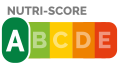
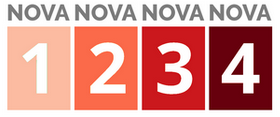
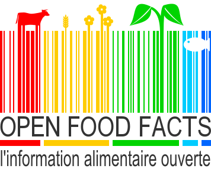

Nutri-score et NOVA
Quand vous remplissez votre caddie, il existe deux moyens rapides d’évaluer la qualité des produits que vous choisissez.
1. Nutri-score pour la qualité nutritionnelle
Le nutri-score permet de comparer la qualité nutritionnelle de produits alimentaires équivalents. Son calcul a été mis au point par des équipes de recherche internationales et est soutenu par les pouvoirs public.

Sa note de A à E tient compte :
des nutriments et aliments à favoriser (fibres, protéines, fruits et légumes)
de l’énergie et des nutriments à limiter (calories, acides gras sucrés, sel et sucre)
Une étude française menée par l’Inserm, l’Inra, le CNAM et la Sorbonne Paris-Nord, publié en septembre 20201, a mis en évidence que la consommation d’aliments moins bien notés est associée à une mortalité accrue (mortalité totale et celle liée au cancer et aux maladies des appareils circulatoires, respiratoires et digestifs).
1. NOVA pour la transformation des aliments
La classification NOVA2 renseigne sur le degré de transformation des produits alimentaires.

La classification NOVA comporte 4 groupes numérotés de 1 à 4 :
- 1 : Aliments non transformés ou transformés minimalement
- 2 : Ingrédients culinaires transformés
- 3 : Aliments transformés
- 4 : Produits alimentaires et boissons ultra-transformés
Des recherches récentes de l’Inserm, de l’Inra et de l’Université Paris 13 (EREN)3 suggèrent une corrélation entre la consommation d’aliments ultra-transformés et un risque accru de développer un cancer.
Nutri-score et NOVA sont complémentaires
Il existe une corrélation positive entre la classification Nova et le nutri-score .
XX% des aliments ultra-transformés (NOVA 4) sont classés en Nutri-score C, D ou E et X % des aliments non transformés (NOVA 1) sont classés en nutri-score A ou B.
Il existe aussi des aliments ultra-transformés classés en nutri-score A ou B. Cela a valu au nutri-score d’être soupçonné par certains de favoriser certaines industries alimentaires. Cela se justifie par le fait que ces deux indicateurs couvrent des dimensions différentes (degré de transformation versus qualité nutritionnelle des aliments).
https://presse.inserm.fr/la-consommation-daliments-moins-bien-classes-au-moyen-du-nutri-score-associee-a-une-mortalite-accrue/40805/↩︎
Le coloris des catégories NOVA a été modifiée pour la lisibilité des graphique de l’étude.↩︎
https://presse.inserm.fr/consommation-daliments-ultra-transformes-et-risque-de-cancer/30645/↩︎
Nutri-score par pays
La base de données d’Openfoodfacts, d’initiative Française, contient une majorité de produits vendus en France. Pour les autres pays du monde, la base est donc loin d’être exhaustive.
Parmi les aliments référencés dans les 10 pays les plus représentés dans la base d’Openfoodfacts, la France se situe en 8ème position dans ses ventes d’aliments à la qualité nutritionnelle élevée : 36,4 % de produits classés A ou B, loin derrière l’Espagne (51,8 %) et l’Italie (45,5 %).
Nutri-score par marque
Explorons les principales marques et les nutri-scores de leurs produits.
A propos des données
 est une base de données alimentaire citoyenne (crowdsourcing).
Elle permet à chaque citoyen de faire des choix plus informés sur son alimentation.
Ces données sont ouvertes (open data) et tout le monde peut les utiliser pour tout usage. Réciproquement, chacun peut contribuer en y ajoutant les produits de sa cuisine ou en participant à un des projets de l’association.
A propos de nous
Nous sommes Kim et Alain, deux étudiants de l'ENSAE passionnés par l'Open-data.
Cette page web a été réalisée dans le cadre d’un projet libre pour un cours dédié à la datavisualisation.
Vous pouvez nous contacter sur notre github pour toute demande.